A-01All women
ඇදුම යනු කුමක්ද? (සියලුදෙනා)
ஆஸ்துமா என்றால் என்ன? (எல்லோரும்)
- දිගුකාලීන රෝගයකි. හුස්ම නාළ ඉදිමී පටු වේ.
- ලක්ෂණ: කැස්ස (බොහෝවිට රාත්රියේදී), හුස්ම හඬ (විසිල් ශබ්දය), හුස්ම හිරවීම, පපුවේ තදබව.
- උත්තේජක: දූවිලි, දුම, සීතල වාතය, ආසාදන, තද ගඳ, ව්යායාම.
- நீண்டகால நோய். சுவாசக் குழாய்கள் வீங்கிச் சுருங்கும்.
- அறிகுறிகள்: இருமல் (பெரும்பாலும் இரவில்), மூச்சிரைப்பு (விசில் சத்தம்), மூச்சுத் திணறல், நெஞ்சு இறுக்கம்.
- தூண்டுதல்கள்: தூசி, புகை, குளிர்காற்று, தொற்றுகள், கடும் நெடி, உடற்பயிற்சி.
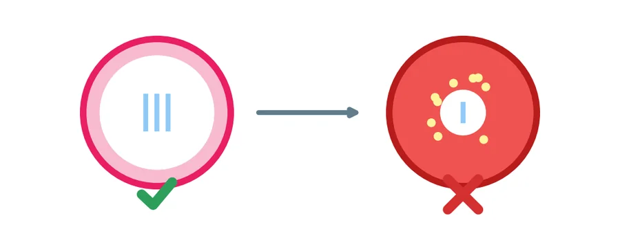
A-02Pregnant
ඇදුම සහ ගර්භණීභාවය (ගර්භනී)
ஆஸ்துமாவும் கர்ப்பமும் (கர்ப்பிணி)
- ඇදුම ඇති බොහෝ කාන්තාවන්ට නිරෝගී ගර්භණීභාවයක් ඇත.
- ඇදුම හොඳ වීමට, නරක වීමට හෝ එසේම පැවතීමට පුළුවන්.
- පාලනය නොකළ ඇදුමයි අනතුර. දරුවාට ඔක්සිජන් අඩු වේ.
- ඇදුම බෙහෙත් ගර්භණීභාවයේදී සහ කිරි දීමේදී ආරක්ෂිතයි. ප්රතිකාර නොකළ ඇදුමේ අවදානම වැඩිය.
- ஆஸ்துமா உள்ள பெரும்பாலான பெண்களுக்கு ஆரோக்கியமான கர்ப்பம் அமையும்.
- ஆஸ்துமா குறையலாம், அதிகரிக்கலாம் அல்லது அப்படியே இருக்கலாம்.
- கட்டுப்படுத்தப்படாத ஆஸ்துமாவே ஆபத்து. குழந்தைக்கு ஆக்சிஜன் குறையும்.
- ஆஸ்துமா மருந்துகள் கர்ப்பத்திலும் தாய்ப்பாலூட்டும்போதும் பாதுகாப்பானவை. சிகிச்சையில்லாத ஆஸ்துமாவின் ஆபத்தே அதிகம்.
A-03All women
ඔබේ ඉන්හේලර් දෙක (සියලුදෙනා)
உங்கள் இரண்டு இன்ஹேலர்கள் (எல்லோரும்)
| Asthalin (සහන දෙන - RELIEVER) | Seroflo (වළක්වන - PREVENTER) | |
|---|---|---|
| ක්රියා කරන ආකාරය | හුස්ම නාළ ඉක්මනින් විවර කරයි | ඉදිමීම සන්සුන් කරයි (දින කිහිපයකින් ක්රියා කරයි) |
| කවදාද | ලක්ෂණ ඇති විට පමණි | සෑම දිනකම, උදේ සහ සවස, සනීපෙන් සිටියත් |
| ඔබේ මාත්රාව | අවශ්ය විට ____ පෆ් | උදේ සහ සවස ____ පෆ් |
| භාවිතයෙන් පසු | කට සෝදා කෙළ ගසන්න | |
| වර්ණය | නිල් ඉන්හේලරය | දම් ඉන්හේලරය |
- "නිල් Asthalin = ප්රහාරය. දම් Seroflo = සෑම දිනකම."
- දෙකම Aerolife ස්පේසරය සමඟ.
- Seroflo ප්රහාරයක් නවත්වන්නේ නැත.
| Asthalin (நிவாரணி - RELIEVER) | Seroflo (தடுப்பான் - PREVENTER) | |
|---|---|---|
| வேலை | சுவாசக் குழாய்களை விரைவாகத் திறக்கும் | வீக்கத்தைத் தணிக்கும் (சில நாட்களில் செயல்படும்) |
| எப்போது | அறிகுறிகள் இருக்கும்போது மட்டும் | தினமும், காலையும் மாலையும், நலமாக இருந்தாலும் |
| உங்கள் அளவு | தேவைப்படும்போது ____ பஃப் | காலை, மாலை ____ பஃப் |
| பயன்படுத்திய பின் | வாயைக் கொப்பளித்துத் துப்புங்கள் | |
| நிறம் | நீல இன்ஹேலர் | ஊதா இன்ஹேலர் |
- "நீல Asthalin = தாக்குதலின் போது. ஊதா Seroflo = தினமும்."
- இரண்டும் Aerolife ஸ்பேசருடன்.
- Seroflo தாக்குதலை நிறுத்தாது.
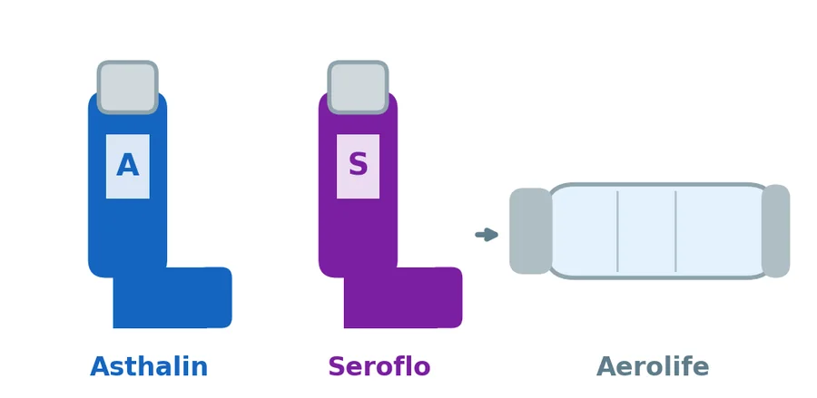
A-04All women
ස්පේසරය සමඟ ඉන්හේලරය භාවිතා කිරීම (සියලුදෙනා)
ஸ்பேசருடன் இன்ஹேலரைப் பயன்படுத்தும் முறை (எல்லோரும்)
- පියන ඉවත් කරන්න. ඉන්හේලරය සොලවන්න.
- එය ස්පේසරයට සවි කරන්න.
- කෙළින් හිඳ හෝ සිට ගන්න. හුස්ම පිටකරන්න.
- මුඛ කොටස වටා ඔබේ තොල් තද කරගන්න.
- එක් පෆ් එකක් පමණක් එබන්න.
- සෙමින් ගැඹුරින් හුස්ම ගන්න. තත්පර 10 ක් හුස්ම රඳවා ගන්න. නැතහොත් ස්පේසරය හරහා සෙමින් 5 වතාවක් හුස්ම ගෙන පිටකරන්න.
- තවත් පෆ් එකක් අවශ්යද? තත්පර 30-60 ක් රැඳී සිටින්න. නැවත සොලවන්න. එකවර එක පෆ් එකක් පමණි.
- Seroflo පමණි: කට සෝදා කෙළ ගසන්න.
- දෙකම භාවිතා කරන්නේ නම්: මුලින් Asthalin, මිනිත්තු 5 කට පසු Seroflo.
- අලුත් ඉන්හේලරයක් හෝ දිගු කාලයක් භාවිතා නොකළ එකක්: මුලින් වාතයට එක් වරක් හෝ දෙවරක් ඉසින්න (පත්රිකාවේ සඳහන් පරිදි).
- ඉගැන්වන අයට: සෑම පැමිණීමකදීම ඇයට එය පෙන්වන ලෙස ඉල්ලන්න.
- மூடியை அகற்றுங்கள். இன்ஹேலரை குலுக்குங்கள்.
- அதை ஸ்பேசரில் பொருத்துங்கள்.
- நிமிர்ந்து உட்காருங்கள் அல்லது நில்லுங்கள். மூச்சை வெளியே விடுங்கள்.
- வாய்ப்பகுதியைச் சுற்றி உதடுகளை இறுக்கமாக மூடுங்கள்.
- ஒரே ஒரு பஃப் மட்டும் அழுத்துங்கள்.
- மெதுவாக ஆழமாக உள்ளிழுங்கள். 10 விநாடி மூச்சை நிறுத்துங்கள். அல்லது ஸ்பேசர் வழியாக மெதுவாக 5 முறை உள்ளிழுத்து வெளிவிடுங்கள்.
- இன்னொரு பஃப் தேவையா? 30-60 விநாடி காத்திருங்கள். மீண்டும் குலுக்குங்கள். ஒரு நேரத்தில் ஒரு பஃப் மட்டும்.
- Seroflo மட்டும்: வாயைக் கொப்பளித்துத் துப்புங்கள்.
- இரண்டையும் பயன்படுத்தினால்: முதலில் Asthalin, 5 நிமிடம் கழித்து Seroflo.
- புதிய இன்ஹேலர் அல்லது நீண்ட நாள் பயன்படுத்தாதது: முதலில் காற்றில் ஒன்றிரண்டு முறை தெளியுங்கள் (துண்டுப்பிரசுரத்தில் உள்ளபடி).
- கற்பிப்பவருக்கு: ஒவ்வொரு வருகையிலும் அவரைச் செய்து காட்டச் சொல்லுங்கள்.
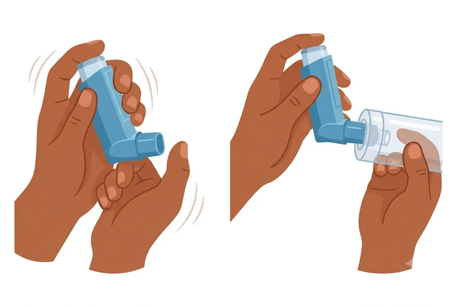
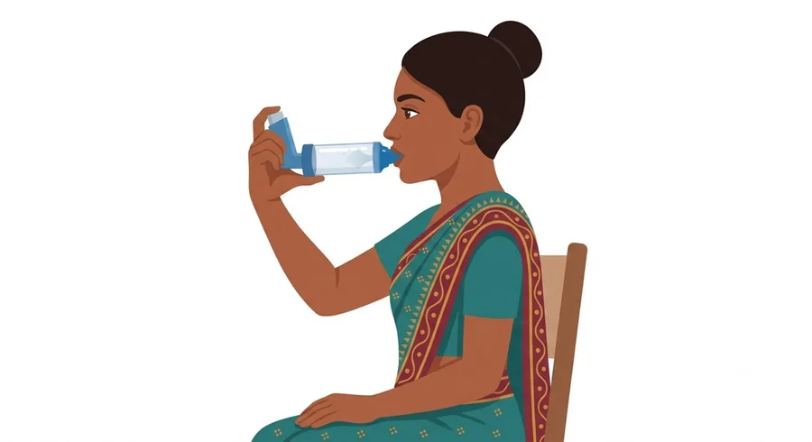
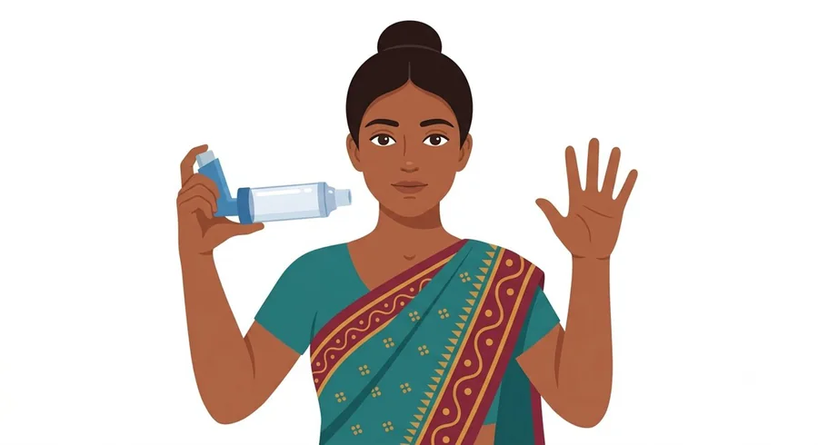
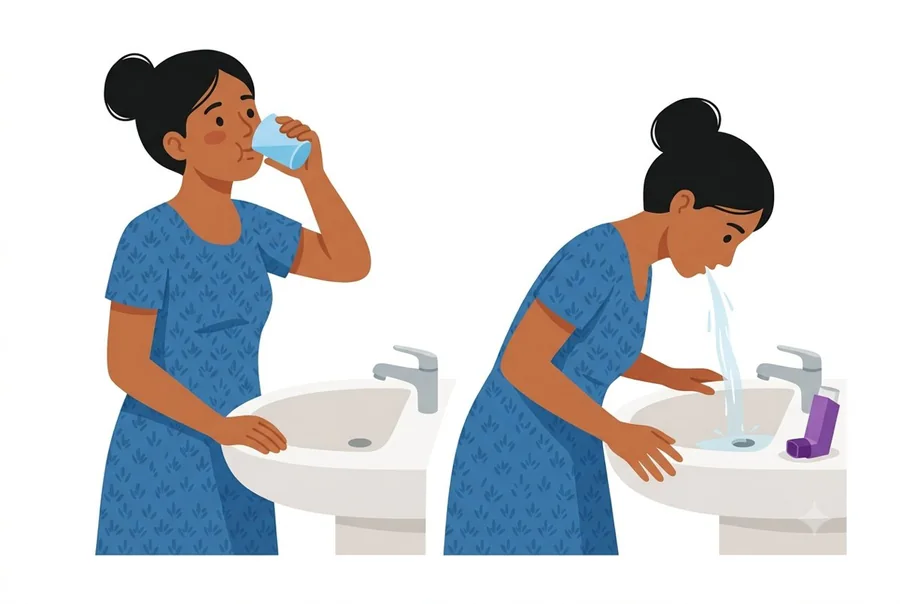
A-05All women
ඉන්හේලරය අවසන් වන විට හඳුනාගැනීම (සියලුදෙනා)
இன்ஹேலர் கிட்டத்தட்ட காலியாவதை அறிதல் (எல்லோரும்)
- අලුත් ඉන්හේලරයක පෆ් 200 ක් පමණ ඇත. පෙට්ටිය බලන්න. පරීක්ෂණ ඉසීම්ද ගණන් ගැනේ.
- මාත්රා ගණකයක් (dose counter) තිබේ නම්: 0 ට ළඟා වන විට මාරු කරන්න.
- ගණකයක් නොමැති නම්:
- ආරම්භ කළ දිනය ටින් එකේ ලියන්න.
- දිනකට පෆ් ගණන x දින ගණන. උදාහරණය: දිනකට පෆ් 4 ක්, පෆ් 200 = දින 50.
- අවසන් වන දිනය ටින් එකේ ලියන්න.
- සතියකට පමණ පෙර අලුත් එකක් ඉල්ලන්න.
- වතුරේ පා කර බලන්න එපා. එය විශ්වාසදායක නොවේ.
- புதிய இன்ஹேலரில் சுமார் 200 பஃப்கள் உள்ளன. பெட்டியைப் பாருங்கள். சோதனைத் தெளிப்புகளும் எண்ணப்படும்.
- அளவுக் கணக்கி (dose counter) இருந்தால்: 0 ஐ நெருங்கும்போது மாற்றுங்கள்.
- கணக்கி இல்லாவிட்டால்:
- தொடங்கிய தேதியை டப்பாவில் எழுதுங்கள்.
- நாளொன்றுக்குப் பஃப்கள் x நாட்கள். எடுத்துக்காட்டு: நாளொன்றுக்கு 4 பஃப், 200 பஃப் = 50 நாட்கள்.
- முடியும் தேதியை டப்பாவில் எழுதுங்கள்.
- ஒரு வாரத்திற்கு முன்பே புதியது கேளுங்கள்.
- தண்ணீரில் மிதக்கவிட்டுப் பார்க்க வேண்டாம். அது நம்பகமானதல்ல.
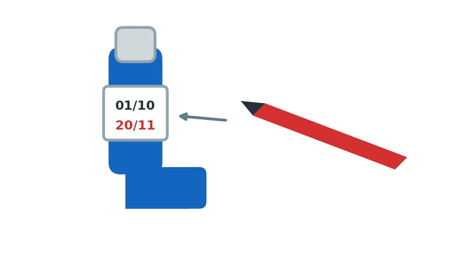
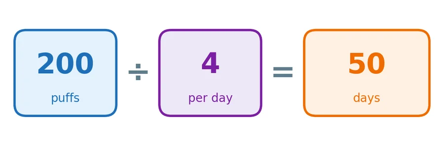
A-06All women
පිරිසිදු කිරීම සහ වියළීම (සියලුදෙනා)
சுத்தம் செய்தலும் உலர்த்தலும் (எல்லோரும்)
ස්පේසරය (සතියකට වරක්):
- එය ගලවන්න.
- උණු වතුරේ ඩිෂ් වොෂ් දියර බින්දු කිහිපයක් දමා මිනිත්තු 15 ක් පොඟවන්න.
- ඇතුළත අතුල්ලන්න එපා. තුවායකින් නොවියළන්න (ස්ථිතික විද්යුත් නිසා).
- රාක්කයක් මත වාතයෙන් වියළන්න. වියළුණු පසු නැවත සවි කරන්න.
ඉන්හේලර් කවචය (සතියකට වරක්):
- ලෝහ ටින් එක ඉවතට ගන්න.
- ප්ලාස්ටික් කවචය ගලා යන වතුරෙන් සෝදන්න. ටින් එක කිසිවිටෙක වතුරේ නොදමන්න.
- කවචය වියළා, ටින් එක නැවත දමන්න.
- ස්පේසරය ඉරිතැලී ඇත්නම් මාරු කරන්න.
ஸ்பேசர் (வாரம் ஒருமுறை):
- அதைப் பிரித்தெடுங்கள்.
- வெதுவெதுப்பான நீரில் சில துளி பாத்திரம் கழுவும் திரவம் விட்டு 15 நிமிடம் ஊறவையுங்கள்.
- உட்புறத்தைத் தேய்க்க வேண்டாம். துணியால் துடைக்க வேண்டாம் (நிலை மின்சாரம் காரணமாக).
- ஒரு தட்டில் காற்றில் உலர விடுங்கள். உலர்ந்த பின் மீண்டும் பொருத்துங்கள்.
இன்ஹேலர் உறை (வாரம் ஒருமுறை):
- உலோக டப்பாவை வெளியே எடுங்கள்.
- பிளாஸ்டிக் உறையை ஓடும் நீரில் கழுவுங்கள். டப்பாவை ஒருபோதும் தண்ணீரில் போடாதீர்கள்.
- உறையை உலர்த்தி, டப்பாவை மீண்டும் வையுங்கள்.
- ஸ்பேசரில் விரிசல் இருந்தால் மாற்றுங்கள்.
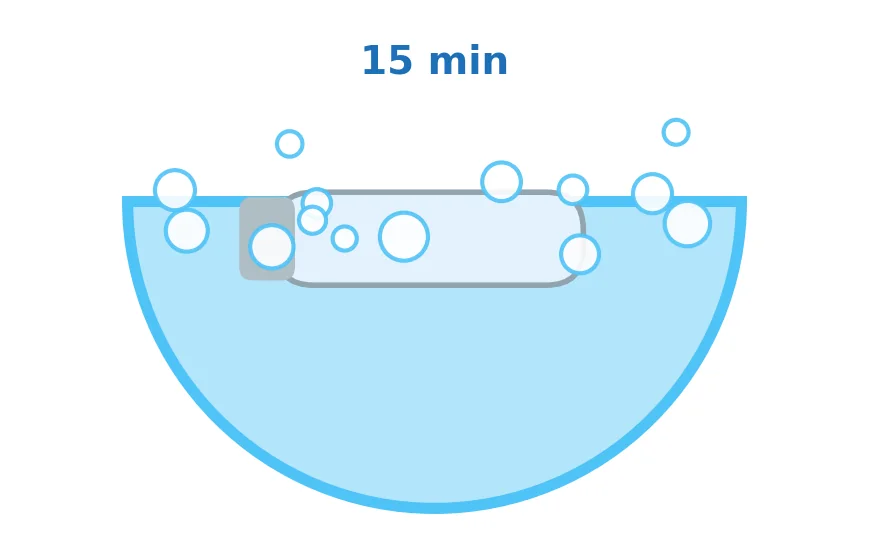
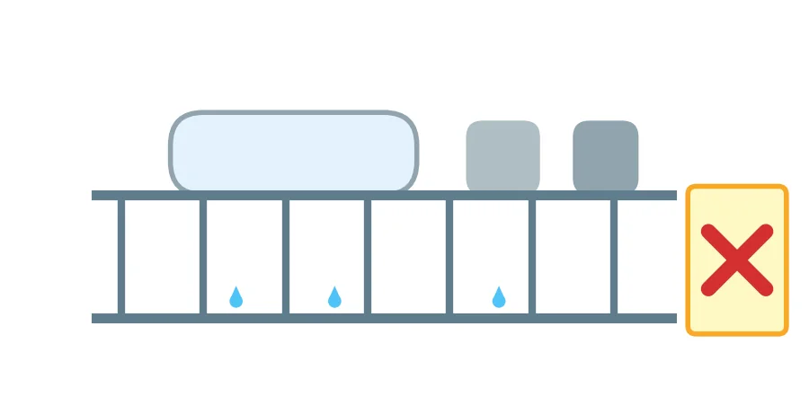
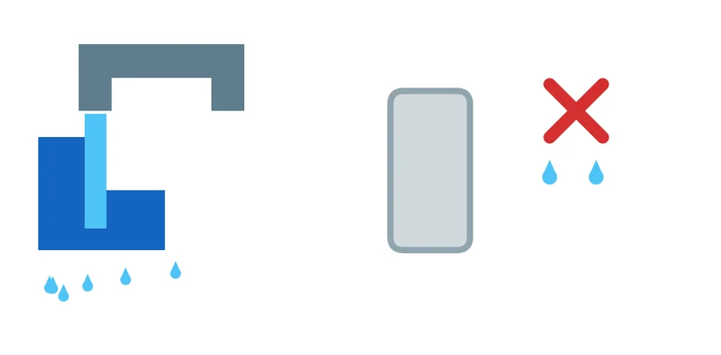
A-07All women
ඔබේ ඇදුම රථ සංඥා සැලැස්ම (සියලුදෙනා)
உங்கள் ஆஸ்துமா போக்குவரத்து விளக்குத் திட்டம் (எல்லோரும்)
| කලාපය | ඔබට දැනෙන ආකාරය | කළ යුත්තේ |
|---|---|---|
| කොළ | කැස්සක් හෝ හුස්ම හඬක් නැත | සෑම දිනකම Seroflo |
| කහ | කැස්ස, හුස්ම හඬ, පපුවේ තදබව, රාත්රියේ ඇහැරීම, සුපුරුදු ප්රමාණයට වඩා Asthalin අවශ්ය වීම | ස්පේසරයෙන් Asthalin. එදිනම සායනයට එන්න. |
| රතු | වාක්යයක් සම්පූර්ණ කළ නොහැක, තොල් නිල් වීම, Asthalin වලින් සහනයක් නැත, නිදිමත | රෝහලට යන අතරතුර Asthalin පෆ් එකින් එක. දැන්ම එන්න. 1990 අමතන්න. |
- රතු කලාපයේදී ඔබම වාහනය පදවන්න එපා.
| மண்டலம் | நீங்கள் உணர்வது | செய்ய வேண்டியது |
|---|---|---|
| பச்சை | இருமல் அல்லது மூச்சிரைப்பு இல்லை | தினமும் Seroflo |
| மஞ்சள் | இருமல், மூச்சிரைப்பு, நெஞ்சு இறுக்கம், இரவில் விழிப்பு, வழக்கத்தை விட அதிகமாக Asthalin தேவைப்படுதல் | ஸ்பேசர் வழியாக Asthalin. அதே நாளில் கிளினிக்கிற்கு வாருங்கள். |
| சிவப்பு | வாக்கியத்தை முடிக்க முடியாது, உதடுகள் நீலமாதல், Asthalin ஆல் நிவாரணம் இல்லை, தூக்கக் கலக்கம் | மருத்துவமனைக்குச் செல்லும்போது Asthalin பஃப்களை ஒவ்வொன்றாக. உடனே வாருங்கள். 1990 ஐ அழையுங்கள். |
- சிவப்பு மண்டலத்தில் நீங்களே வாகனம் ஓட்ட வேண்டாம்.
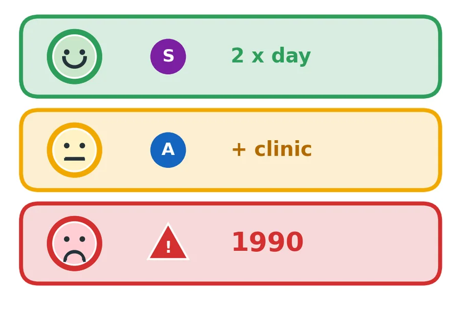
A-08All women
ඔබේ උත්තේජක මඟහරවා ගැනීම (සියලුදෙනා)
உங்கள் தூண்டுதல்களைத் தவிர்த்தல் (எல்லோரும்)
| උත්තේජකය | කළ යුත්තේ |
|---|---|
| දූවිලි, දූවිලි මයිටාවන් | තෙත රෙදිවලින් පිස දමන්න, වියළිව අතුගාන්න එපා. ඇඳ ඇතිරිලි සතිපතා සෝදා, අව්වේ වියළන්න. |
| දුම | ගෙදර දුම්පානය නැත. දර දුම, සුවඳ දුම්, මදුරු දුම් ගොට්ටු, කසල පුළුස්සීම වළක්වන්න. |
| තෙතමනය සහ දිලීර | කාන්දු අලුත්වැඩියා කරන්න. කාමරයට වාතය ලබා දෙන්න. |
| සුරතල් සතුන් සහ කුරුල්ලන් | නිදන කාමරයෙන් පිටත තබන්න. |
| තද ගඳ | සුවඳ විලවුන්, තීන්ත, භූමිතෙල්, බ්ලීච්, ස්ප්රේ වළක්වන්න. |
| සීතල වාතය | නාසය සහ මුඛය වසා ගන්න. |
| සෙම්ප්රතිශ්යාව සහ ෆ්ලූ | අත් සෝදන්න. සෙම්ප්රතිශ්යාවට කලින් ප්රතිකාර කරන්න. |
| වේදනා නාශක | ඇස්ප්රීන් සහ ඩයික්ලොෆෙනැක් ඇදුම උත්තේජනය කළ හැක. පැරසිටමෝල් භාවිතා කරන්න. |
| தூண்டுதல் | செய்ய வேண்டியது |
|---|---|
| தூசி, தூசிப் பூச்சிகள் | ஈரத் துணியால் துடையுங்கள், உலர்ந்து கூட்டாதீர்கள். படுக்கை விரிப்புகளை வாரந்தோறும் துவைத்து வெயிலில் உலர்த்துங்கள். |
| புகை | வீட்டில் புகைபிடிக்கக் கூடாது. விறகு அடுப்புப் புகை, ஊதுபத்தி, கொசுவர்த்திச் சுருள், குப்பை எரித்தல் ஆகியவற்றைத் தவிர்க்கவும். |
| ஈரப்பதம், பூஞ்சை | கசிவுகளைச் சரிசெய்யுங்கள். அறையில் காற்றோட்டம் வையுங்கள். |
| செல்லப் பிராணிகள், பறவைகள் | படுக்கையறைக்கு வெளியே வையுங்கள். |
| கடும் நெடி | வாசனைத் திரவியம், பெயிண்ட், மண்ணெண்ணெய், ப்ளீச், ஸ்பிரே ஆகியவற்றைத் தவிர்க்கவும். |
| குளிர்காற்று | மூக்கையும் வாயையும் மூடிக்கொள்ளுங்கள். |
| சளி, காய்ச்சல் | கைகளைக் கழுவுங்கள். சளிக்கு முன்கூட்டியே சிகிச்சை எடுங்கள். |
| வலி நிவாரணிகள் | ஆஸ்பிரின், டைக்ளோஃபெனாக் ஆஸ்துமாவைத் தூண்டலாம். பாரசிட்டமால் பயன்படுத்துங்கள். |
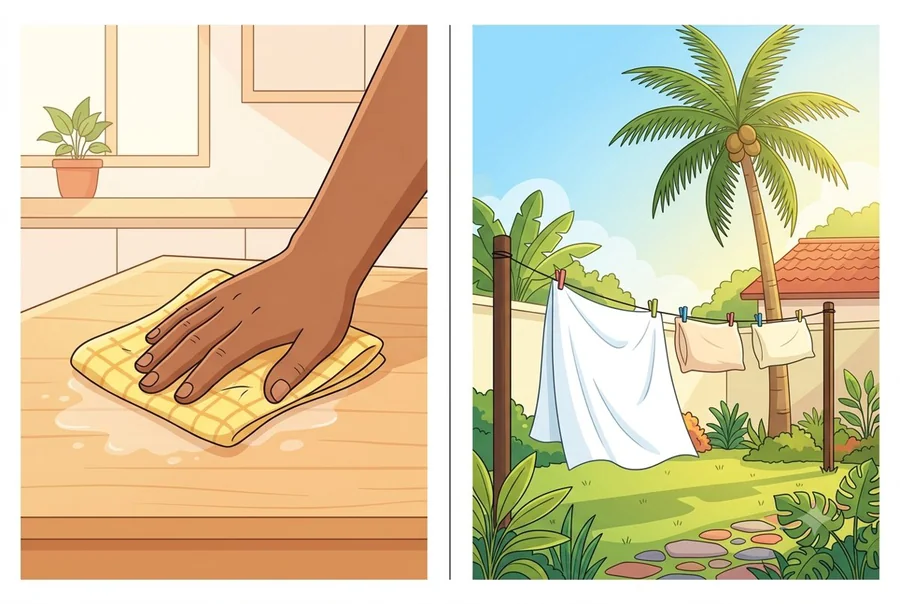
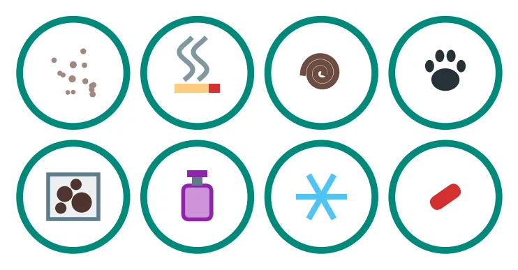
A-09All women
දිගුකාලීන පාලනය වැදගත් වන්නේ ඇයි (සියලුදෙනා)
நீண்டகாலக் கட்டுப்பாடு ஏன் முக்கியம் (எல்லோரும்)
- Seroflo නිහඬව ක්රියා කරයි. එය ක්රියා කරන බව ඔබට නොදැනේ.
- ඔබට සනීපයක් දැනුණත් හුස්ම නාළ ඉදිමී පවතී.
- ඔබ නැවැත්වුවහොත් ප්රහාරයක් ඇති විය හැක.
- හොඳ පාලනය: අඩු ප්රහාර, හොඳ නින්ද, සහ ගර්භණීභාවයේදී දරුවාට වැඩි ඔක්සිජන්.
- ස්ටෙරොයිඩ් ඉන්හේලර් භාවිතා කරන්නේ ඉතා කුඩා මාත්රාවකි, එය ස්ටෙරොයිඩ් ටැබ්ලටවලට වඩා බෙහෙවින් වෙනස්.
- Asthalin වැඩිපුර අවශ්ය වීම අනතුරු ඇඟවීමකි. සායනයට එන්න.
- Seroflo அமைதியாக வேலை செய்கிறது. அது வேலை செய்வது உங்களுக்குத் தெரியாது.
- நலமாக உணர்ந்தாலும் சுவாசக் குழாய்கள் வீங்கியே இருக்கும்.
- நிறுத்தினால் தாக்குதல் வரலாம்.
- நல்ல கட்டுப்பாடு: குறைவான தாக்குதல்கள், நல்ல தூக்கம், கர்ப்பத்தில் குழந்தைக்கு அதிக ஆக்சிஜன்.
- ஸ்டீராய்டு இன்ஹேலர்கள் மிகச் சிறிய அளவே, அவை ஸ்டீராய்டு மாத்திரைகளிலிருந்து மிகவும் வேறுபட்டவை.
- Asthalin அதிகம் தேவைப்படுவது எச்சரிக்கை. கிளினிக்கிற்கு வாருங்கள்.
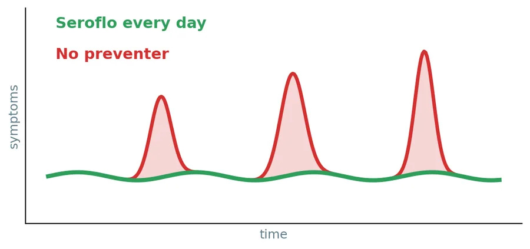
A-10Pregnant · Non-pregnant
ප්රසූතිය, ශල්යකර්ම සහ කිරි දීම (ගර්භනී, ගර්භනී නොවන)
பிரசவம், அறுவைச் சிகிச்சை, தாய்ப்பாலூட்டல் (கர்ப்பிணி, கர்ப்பமில்லாதவர்)
- ඔබේ ඉන්හේලර් සහ ස්පේසරය රෝහලට රැගෙන එන්න.
- ශල්යකර්මයට පෙර ඇතුළුව, ඔබට ඇදුම ඇති බව ඔබ රැකබලා ගන්න සැමට කියන්න. ප්රසූතියේදී සහ ශල්යකර්මවලදී භාවිතා කරන සමහර බෙහෙත් ඇදුම උත්තේජනය කළ හැක.
- ශල්යකර්මයට පෙර සහ පසුවද ඔබේ ඉන්හේලර් භාවිතා කරන්න.
- සියලුම ඇදුම ඉන්හේලර් කිරි දීමේදී ආරක්ෂිතයි.
- உங்கள் இன்ஹேலர்களையும் ஸ்பேசரையும் மருத்துவமனைக்குக் கொண்டுவாருங்கள்.
- அறுவைச் சிகிச்சைக்கு முன் உட்பட, உங்களைக் கவனிப்பவர்கள் எல்லோரிடமும் உங்களுக்கு ஆஸ்துமா இருப்பதைச் சொல்லுங்கள். பிரசவத்திலும் அறுவைச் சிகிச்சைகளிலும் பயன்படுத்தும் சில மருந்துகள் ஆஸ்துமாவைத் தூண்டலாம்.
- அறுவைச் சிகிச்சைக்கு முன்னும் பின்னும் உங்கள் இன்ஹேலர்களைத் தொடர்ந்து பயன்படுத்துங்கள்.
- எல்லா ஆஸ்துமா இன்ஹேலர்களும் தாய்ப்பாலூட்டும்போது பாதுகாப்பானவை.
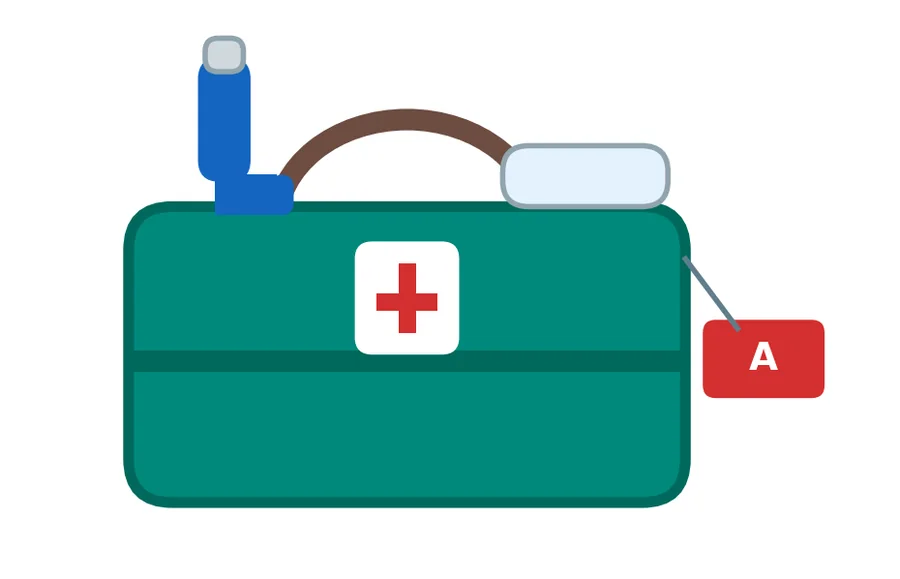
A-11All women
මිථ්යා සහ සත්ය (සියලුදෙනා)
கட்டுக்கதைகளும் உண்மைகளும் (எல்லோரும்)
| මිථ්යාව | සත්යය |
|---|---|
| "ස්ටෙරොයිඩ් ඉන්හේලර් මගේ දරුවාට හානි කරයි." | පාලනය නොකළ ඇදුමයි අනතුර. මාත්රාව ඉතා කුඩායි. |
| "ඉන්හේලර් ඇබ්බැහි කරයි." | නැත. |
| "සනීප වූ විට නවත්වන්න පුළුවන්." | ඇදුමට දිනපතා පාලනයක් අවශ්යයි. |
| "රිලීවර් එක වැඩිපුර භාවිතා කිරීම කමක් නැහැ." | එය අනතුරු ඇඟවීමකි. සායනයට එන්න. |
| கட்டுக்கதை | உண்மை |
|---|---|
| "ஸ்டீராய்டு இன்ஹேலர்கள் என் குழந்தைக்குத் தீங்கு செய்யும்." | கட்டுப்படுத்தப்படாத ஆஸ்துமாவே ஆபத்து. அளவு மிகச் சிறியது. |
| "இன்ஹேலர்கள் பழக்கமாகிவிடும்." | இல்லை. |
| "நலமானதும் நிறுத்திவிடலாம்." | ஆஸ்துமாவுக்குத் தினசரிக் கட்டுப்பாடு தேவை. |
| "நிவாரணியை அதிகம் பயன்படுத்துவது பரவாயில்லை." | அது ஒரு எச்சரிக்கை. கிளினிக்கிற்கு வாருங்கள். |